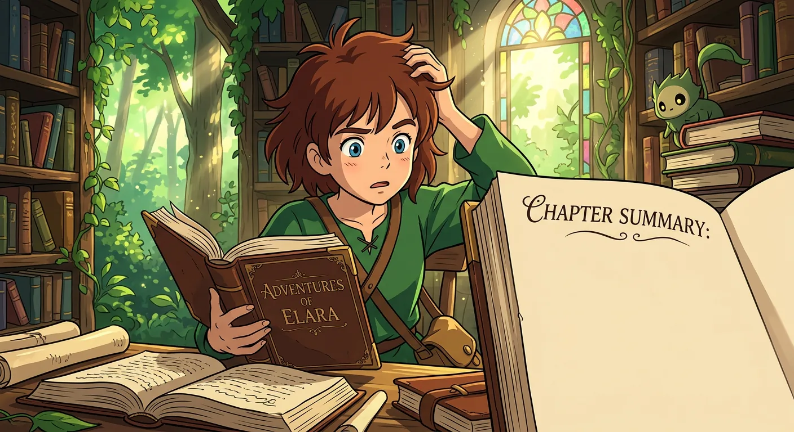
Watched by Vast and Unsympathetic Minds
Long ago, people lived happy, busy lives on Earth. They did not know that someone far away was watching them. On the planet Mars, very clever creatures looked at Earth through special tools. Mars had become cold and dry, with not much water left. The creatures there needed a new home, and Earth looked perfect.
One night, a man named Ogilvy invited his friend to look at Mars through a big telescope. They saw a tiny bright light, like a little dot far, far away. Ogilvy thought maybe a volcano was making flashes on Mars. He did not think anyone lived there. But those flashes were really something being sent toward Earth.
The newspapers wrote a little bit about the strange lights. Most people did not worry at all. They rode bicycles and sang songs and enjoyed the warm summer evenings. On one lovely night, a man walked with his wife and pointed up at Mars glowing in the sky. Everything felt peaceful and safe.
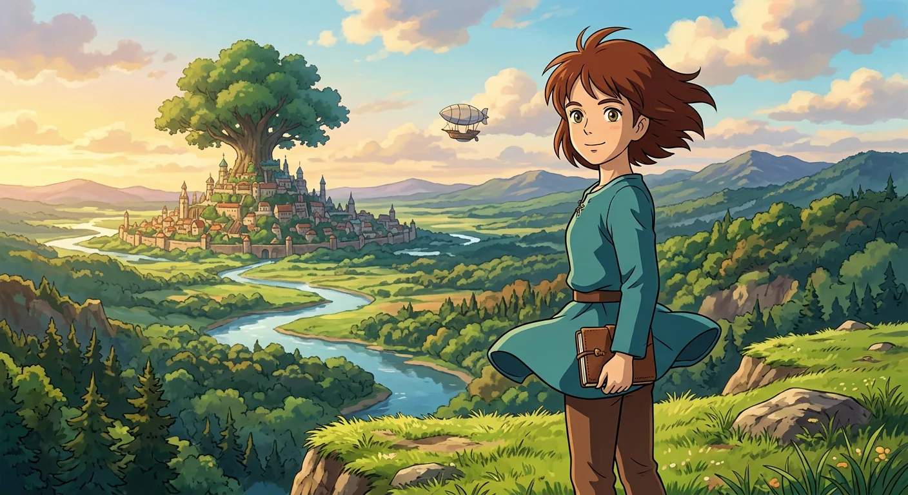
A Cylinder Unscrews at Dawn
Something amazing fell from the sky very early one morning. It looked like a bright green shooting star! Many people saw it flash across the dark sky. They thought it was just a regular space rock.
But a man named Ogilvy wanted to find where it landed. He woke up at sunrise and walked to the sandy fields near his town. There he found a big hole in the ground. In the middle of the hole was something strange. It was not a round rock at all. It was a huge metal tube, as wide as a house! The metal was still warm from falling through the sky. Ogilvy heard soft sounds coming from inside. Then he saw the top was slowly turning. Something inside was trying to get out! Ogilvy got very excited and ran to tell everyone. A news writer named Henderson believed him. They told the whole town. Soon everyone hurried to see this mysterious thing from space.
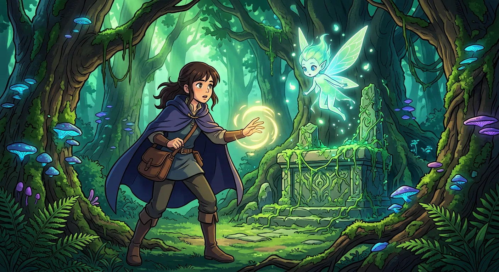
The Cylinder Draws a Crowd
A huge metal cylinder sat in a big pit on the common. It had fallen from the sky and burned the grass all around it. When I came back that morning, about twenty people stood looking at it. Some boys were throwing stones at it, but I asked them to stop. Then they ran off to play instead.
All sorts of people came to see the strange thing. There were cyclists and gardeners and shopkeepers and children too. Most people did not know what it was. They just stared at the big, rusty shape in the ground. I climbed into the pit and looked closely. I could tell this amazing object had come all the way from Mars! I wondered what might be inside.
By afternoon, the news had spread everywhere. Crowds came from nearby towns. Someone even brought a cart to sell apples and ginger beer! Scientists worked hard to dig around the cylinder. They tried to open it, but the lid would not budge. I went to find help with the big crowd, feeling excited about what we might discover next.
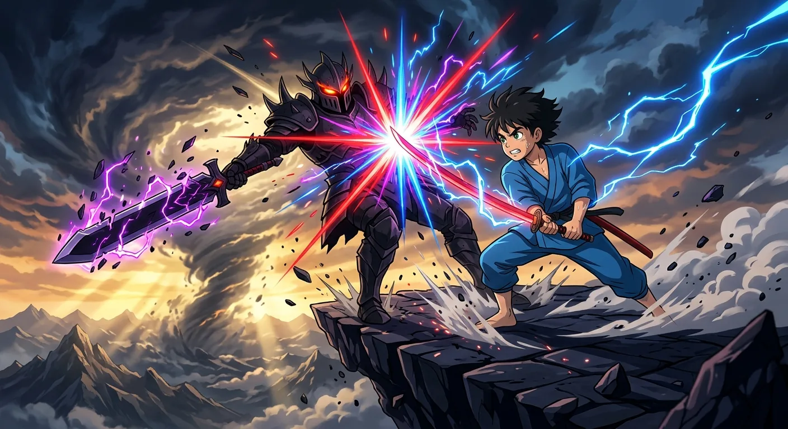
Humanity Meets Its Alien Terror
The narrator went back to the big open field where a crowd had gathered. Everyone was watching a strange metal cylinder that had fallen from the sky. People pushed closer to see, and a boy ran by saying something inside was moving! A loud hum came from the cylinder, and slowly the top began to unscrew all by itself.
When the lid fell off, everyone stared at the dark opening. What came out was not what they expected at all. Instead of a person, they saw something very different. It had big round eyes that glowed, and long wiggly arms like grey snakes. The creature was round and about as big as a bear, with shiny wet-looking skin. It seemed to have trouble moving because Earth felt too heavy for it. Everyone felt very surprised and scared. People started backing away quickly. The narrator ran to hide behind some trees. All around the field, people stood frozen, not sure what to do. No one knew what would happen next.
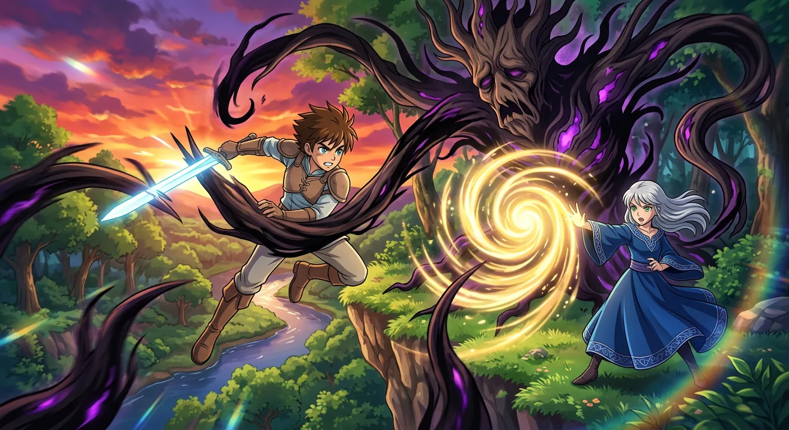
Death Leaping From Man to Man
The narrator stood in the tall grass, watching the big hole where the Martians had landed. He felt scared but also very curious. Strange black arms poked out of the pit and then went back in. Other people stood watching too, all around the common.
As the sky grew darker, some brave people walked closer to the pit. A group of kind, smart men decided to say hello to the Martians. They waved a white flag to show they wanted to be friends. But something terrible happened next. A bright green light came from the pit, and a strange humming sound filled the air. The light hurt the people who were trying to be friendly. Trees and bushes caught fire all around. The narrator was so frightened that he turned and ran away as fast as he could. He stumbled through the grass in the growing darkness, his heart pounding. The stars came out above, shining down on the quiet, smoky common.
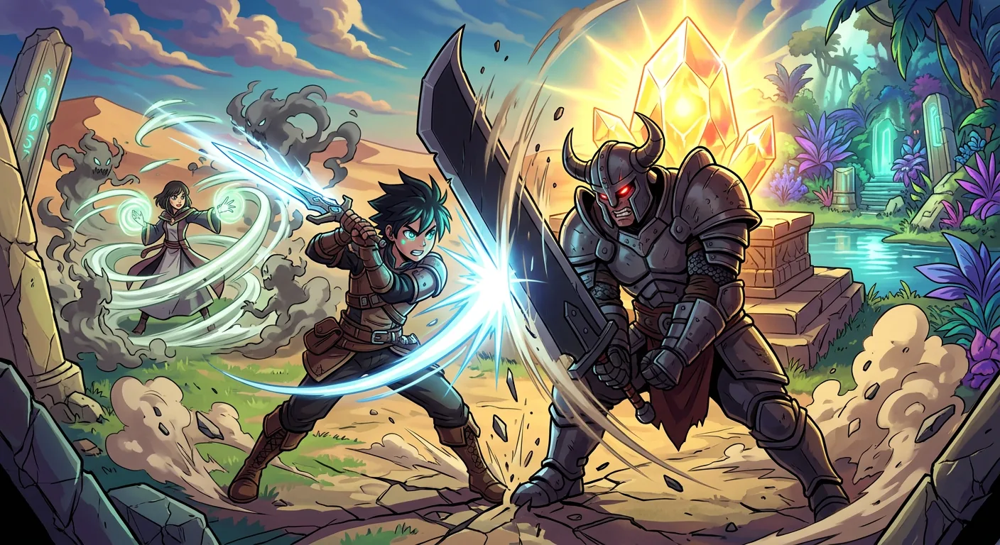
Panic and Death on the Common
That night, something scary happened on the big field called the common. The Martians had a bright beam that made things very hot. It could start fires and melt metal. People in the nearby towns did not know about the danger yet. They thought something interesting was happening, so they walked over to take a look. Young people strolled together in the evening air, curious and excited. Soon, about three hundred people had gathered to watch the strange visitors from space.
Then the Martians used their heat beam. People saw bright flashes and bushes catching fire. The beam swept across the treetops and set them burning. Sparks fell like tiny stars, and leaves floated down like bits of flame. Everyone was so frightened! They all turned and ran back toward town as fast as they could. The roads were crowded and people pushed and bumped into each other. Some people got hurt in the rush. It was a very sad and scary night, and everyone now knew the Martians were not friendly.
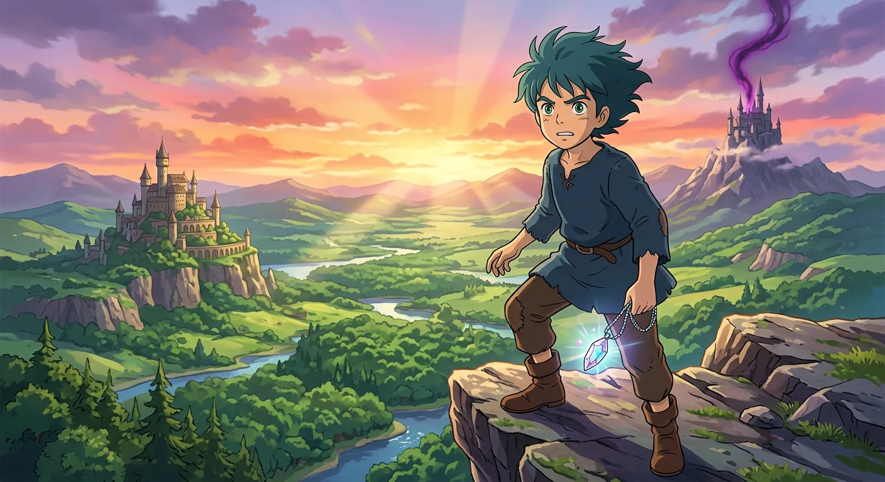
Flight Through Terror and Disbelief
The run home felt strange and scary like a bad dream. Everything was a blur of trees and darkness. Finally there came rest near a bridge by some big gas tanks. After catching a breath and standing up again the hat was gone and clothes were all messy from running so fast.
But the world looked so normal now. A train went by with bright windows. Neighbours stood chatting at their gates. The streetlamps glowed warm and steady. It was hard to believe anything strange had happened at all. Some people by a gate just laughed when they heard about the Martians. They thought it was all a silly joke.
At home a worried wife listened to the whole story. But soon dinner and a cozy room made everything feel better. Surely the Martians could not do much here on Earth. They moved so slowly and seemed so weak. Tomorrow the newspaper would explain everything. The pink lamplight glowed softly and the table looked lovely. It felt safe and warm. But this peaceful dinner would be the last normal evening for quite a while.
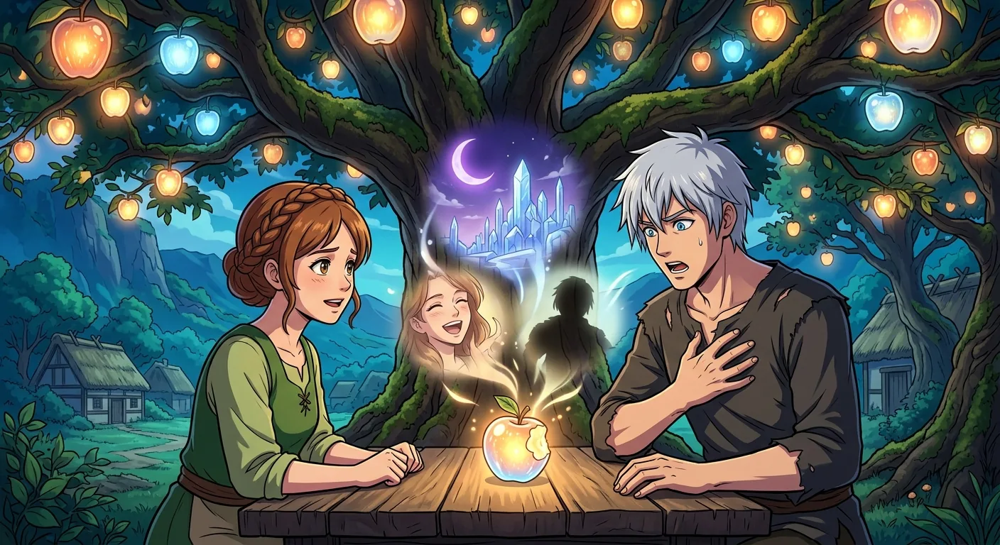
Life Continues as the Poison Spreads
That Friday night, something strange was happening near Woking, but most people did not know. Far away in London, life went on as normal. Families ate dinner together and children went to sleep in their cozy beds. People talked about the strange cylinder from space, but they did not worry much. It seemed like a faraway story that did not matter to them.
Closer to the common, things felt different. Some houses had their lights on all night long. Curious people gathered on the bridges to watch and wonder. At the train station, a boy called out about visitors from Mars. But most travelers just thought there was a small fire burning somewhere. The mysterious visitors kept working through the dark night, making strange sounds and puffs of greenish smoke. Soldiers came to stand watch nearby. Then, just after midnight, everyone saw a bright greenish light fall from the sky into the woods. A second cylinder had come down from space.
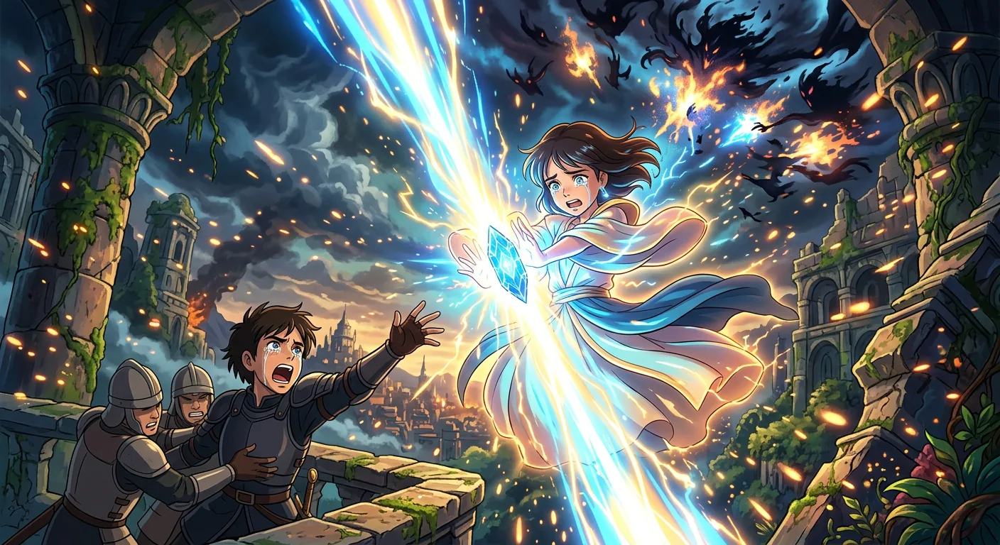
Calm Before the Martian Storm
It was a hot summer morning, and everything felt strangely quiet. I had not slept much, but I went out to the garden early. The milkman came and told us that soldiers had surrounded the Martians. My neighbour was working in his garden and seemed cheerful. He gave me strawberries over the fence and said another big cylinder had landed far away.
I walked toward the common but soldiers stopped me at the bridge. They asked me lots of questions about the Martians. Everyone was waiting and wondering what would happen next. The day grew long and very warm.
Then late in the afternoon, things changed very fast. There was a loud boom and bright flashes of light. Trees caught fire and buildings started to crumble. I knew we had to leave right away. I took my wife's hand and we hurried to the road. I got a horse and cart, and we drove away as quickly as we could. Behind us, smoke rose into the sky. We were heading to Leatherhead where her cousins lived, hoping to find somewhere safe.
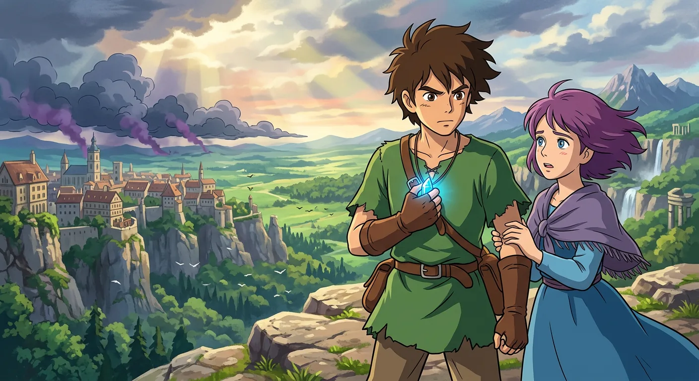
Midnight Journey Through Fire and Lightning
A man drove his wife through pretty countryside to stay with her cousins. The meadows smelled sweet like summer hay. His wife was very quiet and looked worried the whole way. He tried to make her feel better, but she just felt scared inside. When they said goodbye, her face looked pale and sad.
Later that night, he drove back alone under dark, cloudy skies. A strange red glow spread across the sky in the distance. Then something amazing happened. A green light fell from the clouds like a shooting star. Lightning flashed bright purple and thunder boomed so loud. His horse got very scared and ran too fast. The cart tipped over and the man tumbled into a puddle of water.
Then he saw something incredible. Giant metal machines as tall as houses were walking through the trees. They made loud clanking sounds and moved like they were alive. The man was so surprised and scared. He crawled all the way home through the wet woods and locked his door tight. Outside, the storm kept rumbling while he sat shivering, thinking about what he had seen.
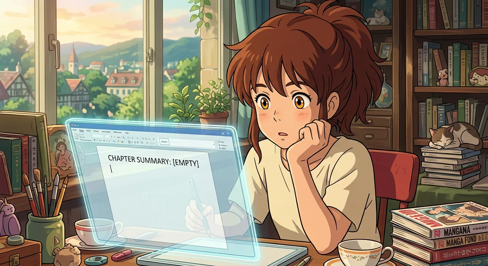
A World Transformed by Fire
The man sat alone in his house feeling cold and tired. His clothes were all wet from the rain. He found dry things to wear and went up to his study. When he looked out the window, everything had changed. The trees were gone. Strange lights glowed red and orange across the land. Big dark shapes moved around in the distance.
He sat in his chair and watched for a long time. The shapes were very tall and they walked on three legs like nothing he had ever seen before. They came from Mars, far away in the sky. Soon a soldier climbed over the garden fence looking scared and lost. The man let him inside. The soldier was so tired he could barely talk. They shared some food together in the dark kitchen. When morning came, they looked outside again. Smoke rose gently into the sky. Everything looked so different now. The two tired friends sat together, wondering what would happen next.
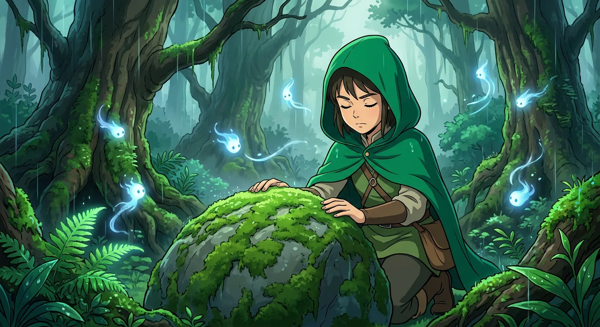
Fleeing Through a Shattered Landscape
The next morning, the narrator and his soldier friend knew they had to leave the house. It was not safe to stay any longer. They packed food and water for the journey ahead. Outside, everything looked strange and quiet. The roads were empty, and people had left in a hurry.
They walked through the woods very carefully, trying to be as quiet as mice. Soon they came to a busy town where families were packing up their carts and getting ready to leave. Children ran around, not quite understanding what was happening. Church bells rang in the distance.
When they reached the river, many people were trying to get across in boats. Then the tall Martian machines appeared, walking quickly across the fields. Everyone was very scared and started running. The narrator jumped into the river to get away. The water got very hot, and he had to swim hard to reach the shore. He was tired and frightened, but he made it safely to the other side.
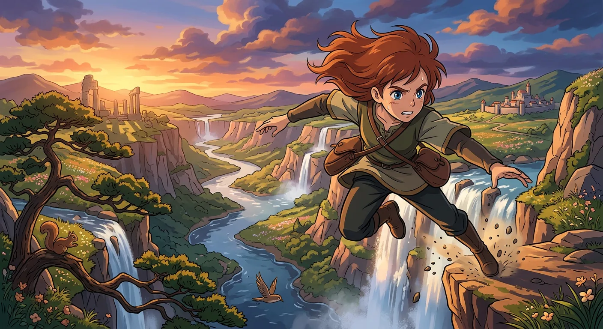
Escape and Encounter Amid Devastation
The strange visitors from Mars had stopped moving forward for a while. They stayed in one spot and worked on building things. Every day, another of their shiny ships fell from the sky bringing more of them. People with big guns got ready to protect their towns and cities.
Meanwhile, the narrator had to get away from a dangerous place. He found a little boat floating on the river and swam out to catch it. He paddled with his hands because there were no oars. Along the way, he saw houses with smoke rising and people running across fields. Everything felt very quiet and strange.
He was so tired that he fell asleep in the tall grass by the river. When he woke up, a man was sitting nearby. This man was called a curate, and he looked very worried and scared. The narrator tried to help him feel braver. Together, they decided to walk north to find safety. The moon glowed softly in the evening sky as they started their journey.
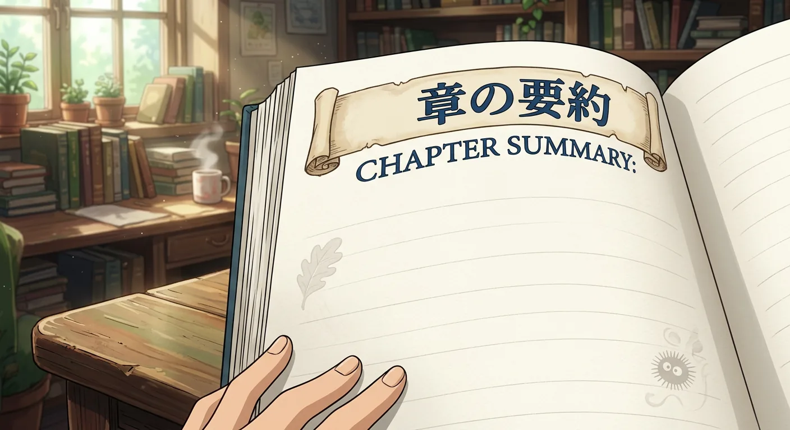
London's Calm Before the Storm
The narrator's younger brother lived in London. He was a student studying to become a doctor. He spent his days reading big books and getting ready for tests. When news came about strange visitors from Mars, he did not worry much at first. The newspapers said everything would be fine. London felt safe and far away from any trouble.
On Sunday, the brother went to the train station. He heard bits of news from people there. Some families had left their homes and looked very tired. Trains were not running the right way. Still, most people in London went about their normal day. They walked in the parks and rode the buses like always. But by nightfall, more and more worried people began arriving in the city. Then, very early Monday morning, bells started ringing loudly. Police officers called out that everyone needed to leave. The brother put some money in his pocket and stepped outside into the quiet morning, not knowing what would happen next.
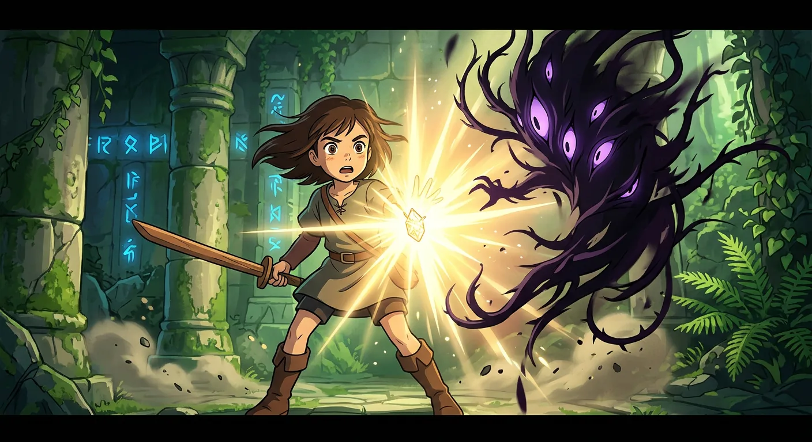
The Martians Resume Their Deadly Advance
While different people watched and worried in other places, the Martians began moving again. Most of them stayed busy in their big pit, where strange green clouds rose into the sky. But three tall Martians walked out across the countryside as the sun went down. They called to each other with loud, strange howling sounds.
Some brave soldiers tried to stop them. One group of soldiers hid in a forest and fired their big guns. They actually knocked one Martian down! But then the other Martians helped their friend, and the soldiers had to run away. The hurt Martian was fixed, and soon more Martians came to join the group. Now there were seven of them standing together. They carried special tubes that made loud booming sounds and sent out thick black clouds. The dark clouds spread across the land like fog, and everyone who saw them coming knew they had to leave quickly. By morning, people in the big city were told they needed to go somewhere safe.
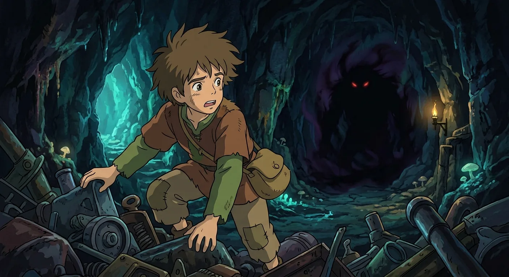
London's Collapse Into Chaos
As morning came, many people in London felt very scared. They all wanted to leave the city at once. The streets became crowded with families rushing to get away. Trains were full, and roads were packed with people walking, riding bikes, and driving carriages.
My brother tried to leave too. He found a bicycle and rode through the busy streets. He was tired and hungry, but he kept going. Along a quiet lane, he met two women who needed help. Some mean men were bothering them, but my brother was brave. He helped chase the men away, and one of the women even helped him. After that, they all decided to travel together.
The roads were dusty and full of people hurrying along. Everyone looked tired and worried. My brother and his new friends kept moving east, hoping to find a safe place. When evening came, they stopped to rest, watching the long line of travelers still walking past them into the night.
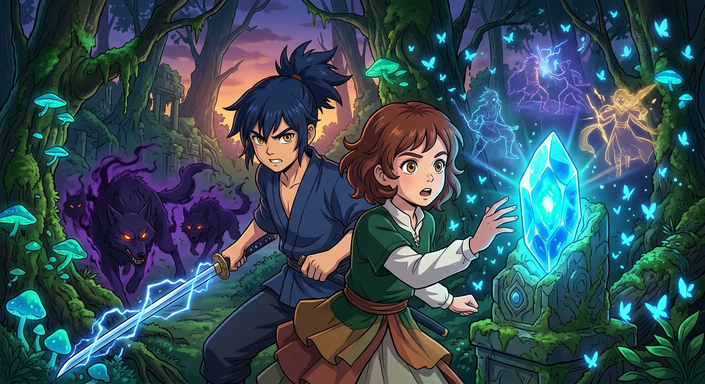
Humanity's Desperate Flight to the Sea
The narrator's brother had to escape with two friends. Their names were Mrs. Elphinstone and her sister-in-law. Many, many people were trying to leave the city all at once. The roads were very crowded and everyone was worried. The three travelers walked for days, looking for a way to be safe. They heard stories about the Martians moving closer. Finally, they reached the sea and saw something wonderful. Hundreds and hundreds of boats floated on the water, waiting to help people get away.
They climbed aboard a big steamboat heading far across the sea. But then three Martians came walking through the shallow water toward all the boats. A brave warship called the Thunder Child raced toward the Martians to protect everyone. The ship was very brave and stopped two of the Martians before it disappeared into clouds of steam. People on all the boats cheered because the Thunder Child had saved them. As night came, the little steamboat carried the brother and his friends safely away across the dark water.
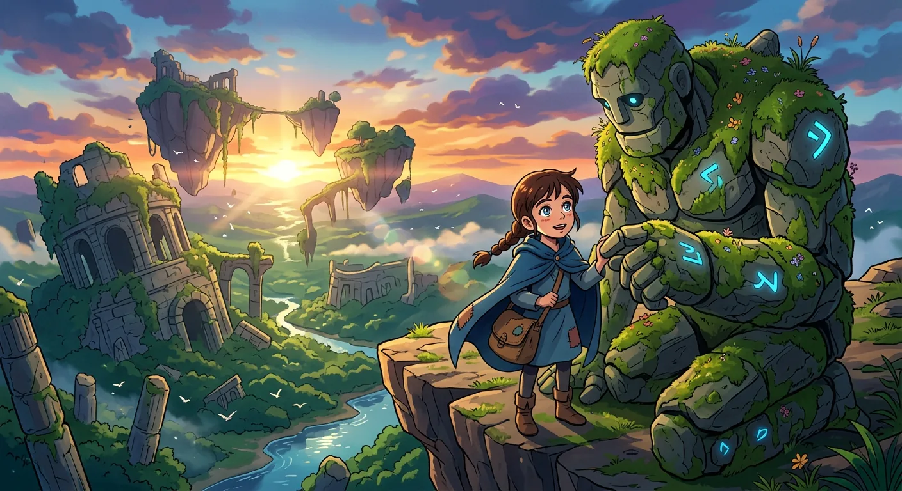
Trapped by Smoke, Freed to Flee
The narrator and the curate had been stuck in an empty house for two whole days. A strange dark smoke filled the air outside, so they could not leave. The narrator worried very much about his wife far away. He hoped she was safe and not too scared.
Then on Monday, a Martian came walking across the fields. It sprayed hot steam everywhere, and the dark smoke began to clear away. Now they could finally go outside again! The land looked very different, all dark and strange. The two men gathered food and water and started walking toward the narrator's wife.
They walked through many towns and saw other people who looked frightened. Near one place, they saw a tall Martian machine picking people up and carrying them away. The narrator wondered what the Martians wanted.
That night, they found a nice house with bread and ham to eat. But suddenly there was a bright flash and a loud crash! The house fell down around them. When the narrator woke up, he and the curate were trapped under the broken house. Through a small hole, they could see a Martian right outside. Now they had to be very, very quiet and wait.
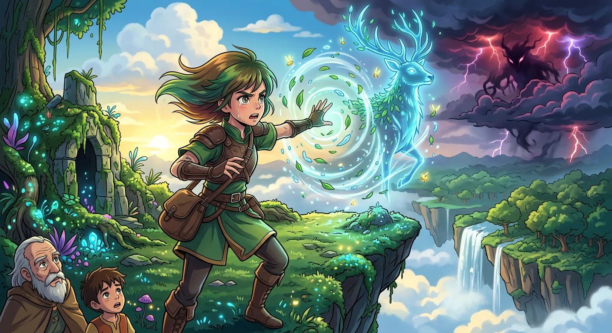
Martians Revealed at the Pit's Edge
From their hiding spot in a broken house, the narrator and the curate peeked through a gap in the wall. What they saw was amazing and strange. A huge round pit had formed right next to them, and inside it, the Martians were busy at work. The Martians looked very different from people. They had big round bodies about as wide as a bathtub, with large dark eyes and long thin arms like octopus tentacles. They used amazing machines that moved like living creatures, with bendy metal arms that could pick things up and build things. The machines did not have any wheels at all. Instead they had special parts that squeezed and stretched to make them move. The Martians did not talk out loud to each other. They shared their thoughts quietly, like magic, working together without saying a word. Strange red plants had started growing up the walls of the pit, adding bright color to everything. The narrator watched in wonder as the machines kept building, some even working all by themselves.
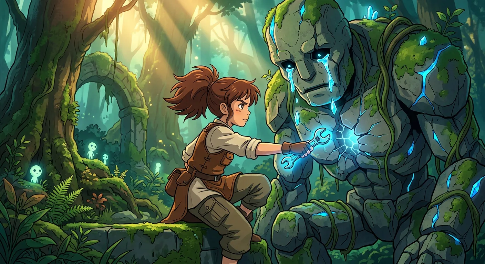
Trapped with Madness and Martians
The narrator and another man called the curate were hiding inside a broken house. A big Martian machine had crashed nearby, and they were very scared. They stayed in the dark cellar and tried to be as quiet as mice. Sometimes they peeked through a tiny hole in the rubble to see what the Martians were doing outside. It was scary to look, but they could not help being curious.
The two men did not get along very well. The curate cried a lot and talked too much, which made it hard to stay hidden. He also ate their food too quickly, and the narrator worried they would run out. The narrator tried to explain they needed to be patient and wait for the Martians to leave, but the curate would not listen. It was very hard being stuck together in such a small, dark space. Then one quiet night, the narrator heard something wonderful far away. Boom, boom, boom! It was the sound of big guns. Somewhere out there, people were still fighting back. That gave him a tiny bit of hope.
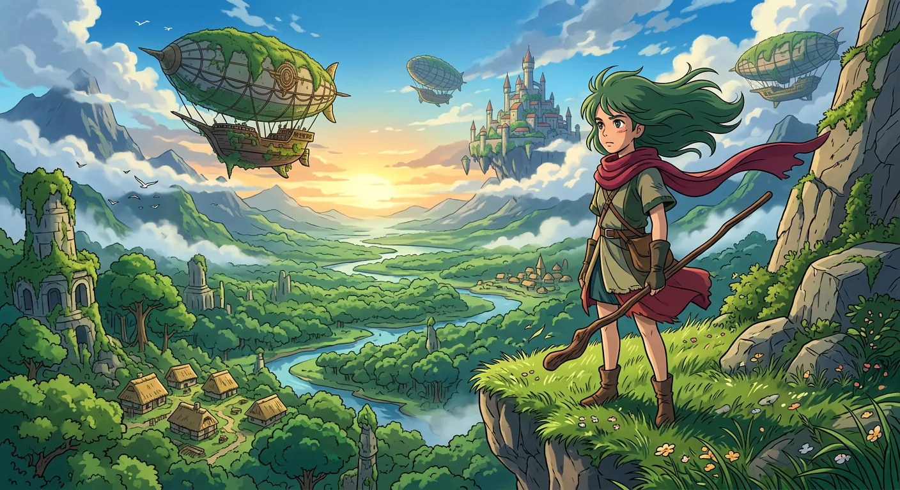
Madness, Violence, and Martian Discovery
On the sixth day of hiding in the ruined house, the two men began to argue. The curate was so scared and hungry that he stopped thinking clearly. He wanted to eat all their food at once. The narrator knew they needed to save their food to stay safe. He tried very hard to help the curate stay calm and quiet.
But the curate grew more and more upset. He started talking loudly, even though they needed to whisper. The Martians were still outside, and any noise could bring danger. The narrator begged him to be quiet. When the curate tried to leave the house, the narrator had to stop him. He gently knocked the curate down so he would be still.
Then something scary happened. A Martian machine reached a long metal arm into the house, searching around. The narrator hid in the coal cellar and stayed very, very still. The metal arm touched his boot but then went away. For two whole days, the narrator hid in the dark, waiting until it was safe to come out again.
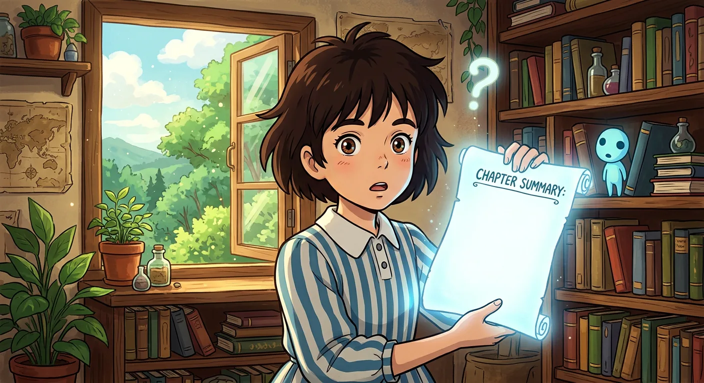
Emergence from the Martian Pit
For many days, the man hid in a dark little room. He was so hungry and thirsty that he felt very weak. There was no food left anywhere. Everything was quiet outside, which felt strange and a bit scary. Finally he found some water to drink, and it helped him feel a little better.
One morning, he heard a dog sniffing nearby. The dog poked its nose through some red plants that had grown over everything. When the dog left, the man peeked outside and saw something amazing. The Martians were gone. The big pit was empty and silent. He pushed through the red plants and stepped outside for the first time in so long. The world looked very different now. Strange red plants covered everything like a carpet. Houses were broken and empty. Birds hopped around, and a thin cat walked by. But there were no people anywhere. The sky was bright blue, and the fresh air felt wonderful. He wondered what he would find next.
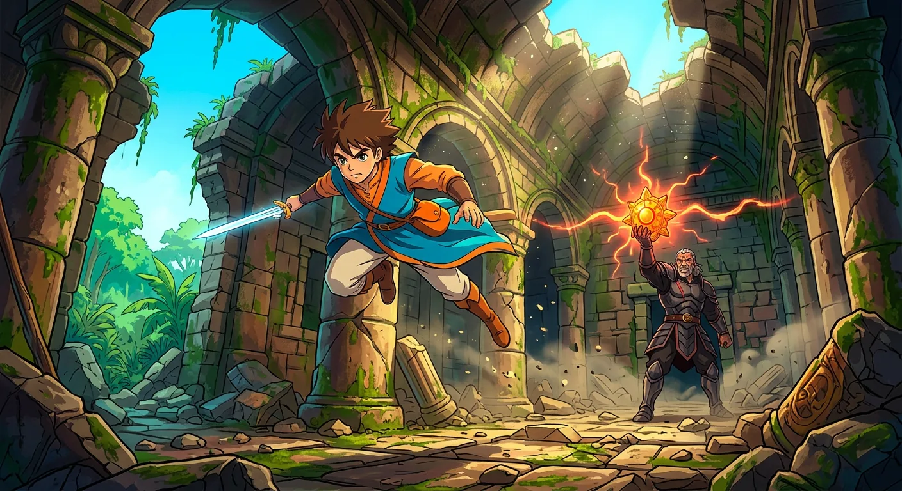
Dethronement Among the Red Weed
I had been hiding for many days in a dark place. When I finally came outside, everything looked so strange and different. Red plants from Mars had grown everywhere! They covered the ground and wrapped around the trees. The whole world looked like it was painted in shades of red and crimson.
I was very hungry after hiding for so long. I found a little garden with some carrots and onions growing. I picked them quickly and ate what I could find. Then I walked through the tall red plants toward the river. The strange red weed had grown all along the water. But something wonderful was happening. The red plants were getting sick and starting to fade away. They could not live on our Earth after all. The water would carry the wilted plants out to sea. I kept walking as the sky grew dark. I felt very alone, but something inside me said to keep going.
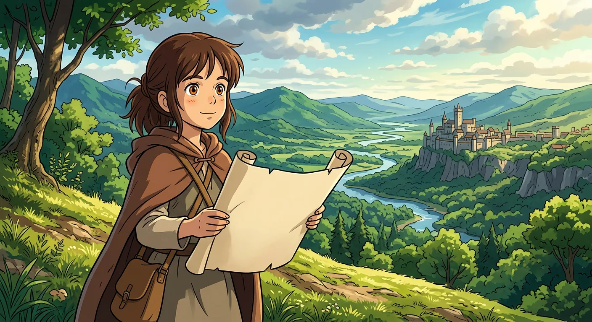
Refuge, Reflection, and Restless Dawn
The narrator finally escaped from hiding and found a place to rest. It was an empty inn on top of a hill. He was so hungry! He searched every room but only found some old biscuits and two cans of pineapple. He did not turn on any lights because he was afraid the Martians might see. That night he could not sleep well. He thought about many things, especially his dear wife. He hoped so much that she was safe somewhere.
In the morning, the sky was pink and golden and very pretty. He walked toward a big open field where yellow flowers grew. Little frogs hopped all around in a muddy puddle. Then he saw someone hiding in the bushes. It was a soldier he had met before! The soldier had big ideas about people hiding underground to stay safe. They spent the day together, but the narrator started to feel bad. He missed his wife very much. He decided he must go to London to find out what happened.
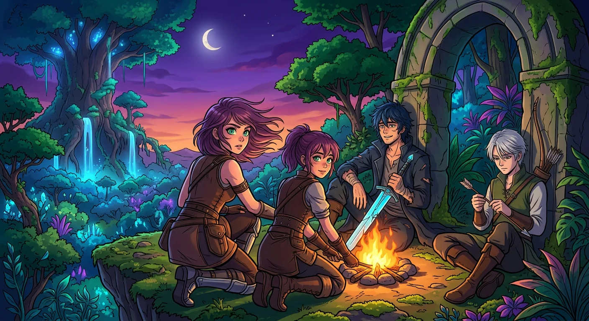
The Eerie Silence and Alien Wailing
The narrator walked through a very quiet city. Hardly anyone was around. The streets were empty and still. Red weeds grew everywhere, but some were turning white and dying. It felt strange and lonely to walk through such a big, silent place.
Then a strange sound began. It was a sad, low cry that went on and on. The sound made the narrator feel tired and very alone. But something inside said to keep going. So the narrator walked toward where the sound was coming from. Near a big park stood a tall Martian machine, but it was not moving at all. Birds flew around it. The narrator climbed a hill and looked down. All the Martians had stopped. They were not dangerous anymore. Tiny germs, so small you cannot see them, had made the Martians sick. The city was safe now. The narrator felt grateful and thought of home and the people waiting there.
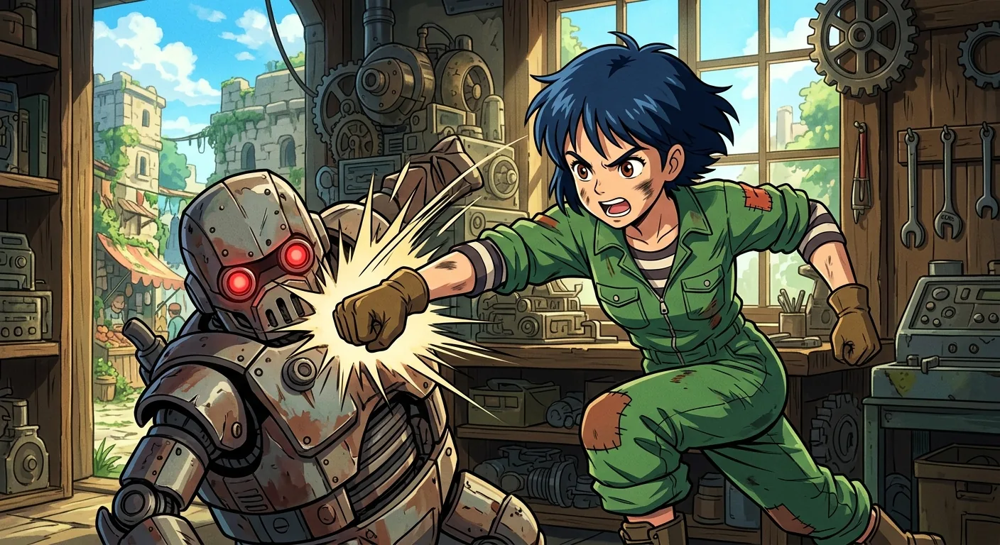
The World Revives in Ruin
He had been through so much that his mind needed a very long rest. For three whole days, he could not remember anything at all. Kind strangers found him wandering and took care of him until he felt better. They gave him food and a safe place to sleep. When he woke up, he learned that the Martians were gone forever. People everywhere were so happy! Church bells rang out across England. Ships full of bread and good food sailed toward London to help everyone.
After a few days, he wanted to go home. The streets were busy again with people walking and shops opening up. He took a train through the countryside, looking out the window at everything. When he finally reached his house, the door was open and everything looked just the same as when he left. Then he heard a voice behind him. He turned around and there stood his wife! They had found each other again, and he was not alone anymore.
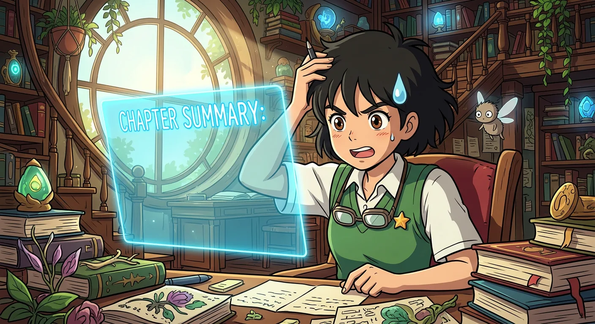
Humanity's Uncertain Future Among the Stars
The story is almost over now. The narrator thinks about everything that happened. The visitors from Mars did not lose because of our brave soldiers. They got sick from tiny, tiny things called germs that live on Earth. Their bodies had never met these germs before, so they could not fight them off.
Some people wonder if the visitors might come back someday. The narrator looks up at the stars and feels a little worried. But maybe something good came from all this trouble too. People learned to work together and help each other. And now everyone knows that space is very big, with so many things we do not understand yet.
The narrator still feels shaky sometimes, remembering the scary days. But then he holds his wife's hand. He thought he had lost her, and she thought she had lost him. Now they are together again, safe and sound. The hard times are over, but no one will ever forget what happened.
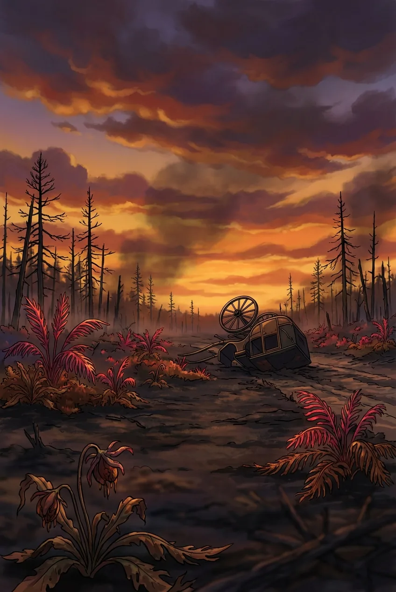